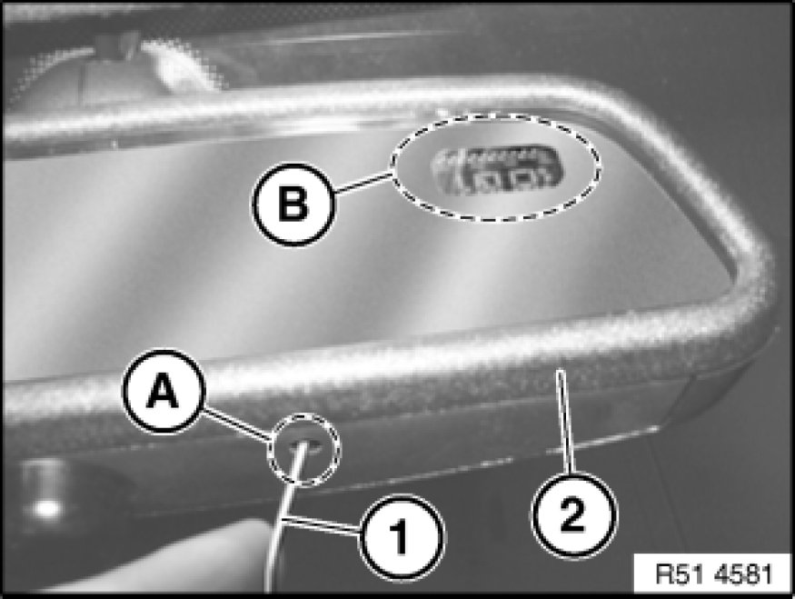

Compass: Testing and Inspection
51 16 ... - Calibrating compass in interior rearview mirror (up to 09/08)

Note:
It may be necessary to alter the magnetic deflection zone if the vehicle is more than two ranges away from the set deflection zone.
For numbers of magnetic deflection zone, refer to Owner's Handbook.
If may be necessary to calibrate the compass if:
- vehicle battery has been clamped off for an extended period of time
- "C" appears in compass display
- there is no compass display

Setting magnetic deflection zone:
- Switch ignition on
- Using a suitable tool (1), press pushbutton in area (A) of mirror (2) until a number appears in compass display (B)
- Press pushbutton repeatedly until number of desired zone appears
- Wait until direction display appears
- Magnetic deflection zone is now set
Calibrating compass:
- Switch ignition on
- Using a suitable tool (1), press pushbutton in area (A) of mirror (2) until "C" appears in compass display (B)
- Drive vehicle 2 to 3 times in a circle at approx. 10 mph
- Calibration process is completed when direction display appears